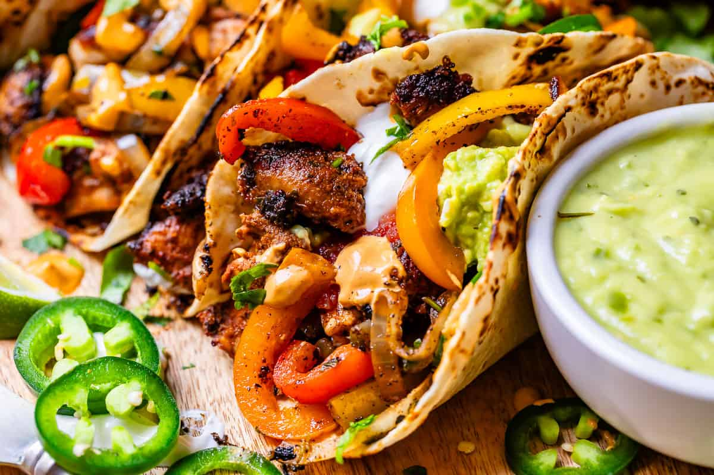

Chicken Fajitas

Ingredients
- 1 1/2 lbs chicken breast
- 2 TBS lime juice, from 1 lime
- 1 TBS soy sauce
- 1 tsp liquid smoke
- 2 TBS cumin
- 2 tsp kosher salt
- 2 teaspoons chili powder
- 1 teaspoon smoked paprika
- 1 teaspoon onion powder
- 1/4 teaspoon cayenne pepper, (or more, if you like it spicy!)
- 1/3 cup chopped cilantro, (plus more to garnish, optional)
- 4 cloves garlic, smashed and minced
- 2 tablespoons vegetable oil, for searing chicken
- 2 tablespoons butter, for searing chicken
- 3 small red, yellow, or orange bell peppers, sliced
- 1 medium onion, sliced
- 1 teaspoon kosher salt, for onions and peppers
- 12 6-inch flour tortillas, sometimes labeled "fajita size"
- 1 cup shredded Monterey Jack cheese
- Sour Cream
- Guacamole
- Lime wedges
- Cilantro
To Garnish:
Marinate the chicken. Slice 1 and 1/2 pounds chicken thighs into long 1-inch wide strips.* Cut against the grain, meaning your knife should be perpendicular to the lines you see running in the raw chicken.
Add all the marinade ingredients: 2 tablespoons lime juice, 1 tablespoon soy sauce, 1 teaspoon liquid smoke, 2 tablespoons cumin, 2 teaspoons kosher salt, 2 teaspoons chili powder, 1 teaspoon smoked paprika, 1 teaspoon onion powder, 1/4 teaspoon cayenne pepper, 1/3 cup chopped cilantro, and 4 cloves of garlic (at least 1 tablespoon minced). Stir it into the chicken and make sure it's all well distributed.
Let marinate for 15 minutes. (or up to 24 hours in the fridge!)
Prep the veggies. Slice the bell peppers into 1/4 inch slices. I like to cut the long strips in half, so they are more bite size. See photos. Set aside.
Slice off the knobby ends of the onion. Place the flat side on the cutting board, and cut in half. Place the halved side down on the cutting board, then make 1/4 inch slices. Add to the onions to the peppers and set aside.
Sear the chicken. Heat a 12 inch cast iron skillet over medium high heat. (Or use the sturdiest large skillet you have.) Let the pan preheat for at least 2 minutes until is crazy hot. Add 2 tablespoons vegetable oil and swirl to coat the pan. It should shimmer right away.
Use tongs to add chicken strips to the pan one at a time. Do your best to get as much of the marinade off the chicken as you can, let it drip off. Leave at least 1-2 inches of space between strips of chicken, they need room to sear. Be careful, the oil may splatter! Add as many as you can to the pan without crowding; you will have to do this in 2-3 batches.
Sear for about 2 minutes until the bottom is blackened.
Add 1 tablespoon butter to the pan and use the tongs to swirl it around in between the chicken. Use the tongs to flip each piece of chicken one by one, landing on the melted butter. Let sear on the second side for about 1-2 minutes, until a thermometer in your largest piece reads 155 degrees (the temp will continue to rise off-heat). Or just cut one in half to check that it's white and not pink.
Repeat with the remaining chicken strips. Hang on to that marinade! Set it aside.
Remove the chicken to a plate or cutting board, then tent with foil to keep warm. I actually usually stick it in my turned-off microwave.
Cook the peppers and onions.Add 2 more tablespoons cooking oil to the cast iron skillet and make sure your heat is still at medium high. Add the sliced peppers and onions all at once, and feel like a boss with all those veggies mounded so high. Sprinkle with 1 teaspoon kosher salt, then add all the remaining chicken marinade right away. Stir up all the browned bits from cooking the chicken.
Saute for about 2-3 minutes, until crisp-tender, or more. How long you cook the veggies is totally up to you. Keep in mind they will continue to cook a little even after you turn off the heat. Traditional fajitas are cooked only until the peppers and onions are still pretty inflexible, and quite colorful. I tend to like mine cooked a little past that.
Add in the chicken. Once you have the veggies how you like them, remove from the heat. Take a minute to cut any larger pieces of chicken into more bite-size pieces. Add all the chicken and any resting liquid into the pan with the peppers.
Prep the tortillas.Warm the flour tortillas one by one in a clean skillet set over medium heat. Top each tortilla with a sprinkle of shredded cheese (Monterey Jack, Oaxaca, quesadillla, etc.) if you want the ultimate experience! Heat until the cheese melts, then gently fold in half and keep warm in a tortilla warmer (or on a plate covered with a tea towel)
Serve with guacamole, sour cream, cheese, etc.